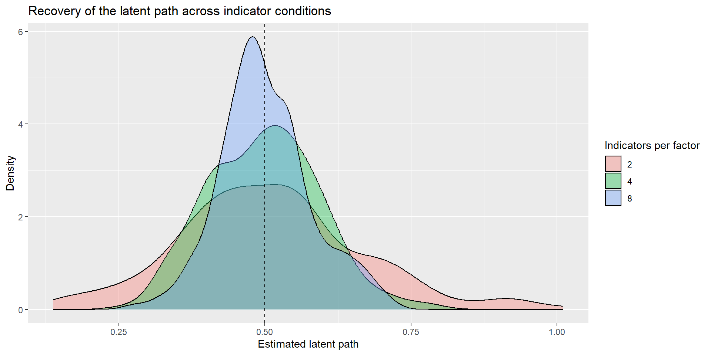
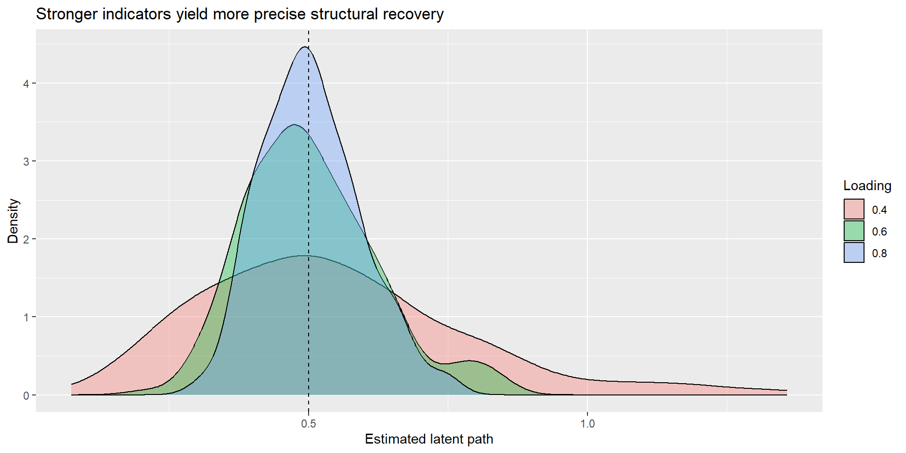

Indicator Indifference, Indicator Sampling, and Structural Robustness
Why reflective indicators are not the construct — and why indicator choice still matters
Tommaso Feraco
Why this extra?
The core SEM assumptions:
latent paths are only as meaningful as the measurement model behind them
fit does not guarantee construct validity
structural interpretation should follow a defensible measurement model
This extra slows down on one deeper question:
If reflective indicators are meant to be manifestations of a construct, how much should the exact indicator set matter?
Here
what indicator indifference means
why it is a strong idea in psychology
why it matters for structural relations
an intelligence example
simulations on number of indicators and loading quality
Learning objectives
By the end of this extra, you should be able to:
explain the basic idea of indicator indifference under a reflective model
distinguish indicator indifference from measurement precision
explain why finite indicator choice can affect the stability of latent relations
interpret a simple simulation showing how number of indicators and loading size affect structural recovery
articulate why some indicators may be more central, more contaminated, or more auxiliary than others
The core idea
Reflective assumption
In a reflective measurement model:
the latent variable is conceptually prior to the indicators
item responses are treated as effects or manifestations of the latent variable
the construct is not identical to any one observed item
This is what makes latent-variable SEM more than a weighted sum-score exercise. It makes SEM theory-builder!
Indicator indifference: the strong reading
Strong interpretation
A strong reflective reading suggests:
If indicators are valid manifestations of the same latent variable, then the precise indicator set should not be the essence of the construct.
So, in principle different good indicators of the same construct
should support similar inferences about the latent variable
and should not radically change the substantive structural story
But psychology rarely gives us strict indifference
In applied psychology, indicators often differ in:
facet coverage
wording and method variance
task demands
contextual contamination
closeness to the construct of interest
So the practical question is usually not:
“Are indicators literally interchangeable?”
It is more often:
“How much do my conclusions depend on this particular sample of indicators?”
Note
In many areas, the facets included are directly used to define/label the upper-level constructs. When starting with an EFA this is necessary, but poses many limits…
Important distinction
Two nearby ideas
Indicator indifference
concerns whether the construct is conceptually tied to a particular indicator set
Measurement precision / indicator sampling
concerns how well a finite set of indicators helps us recover the latent variable and its relations
These are related, but they are not identical.
Why this matters for SEM
Structural relations are latent-level claims
In SEM, the substantive claim is usually about a relation such as:
\[
\eta_2 = \beta \eta_1 + \zeta
\]
The claim is not primarily about one exact questionnaire form, but about a construct.
But in practice we only observe a finite, imperfect sample of indicators.
So structural estimates can depend on:
how many indicators we have
how strongly they load
whether one is weak or contaminated
whether the indicator set covers the construct well
Better wording than “good latent score”
SEM-friendly phrasing
Instead of asking:
“How many items do I need for a satisfying latent score?”
ask:
“How many and which indicators are needed to define the latent variable well enough that structural relations are estimated precisely and interpreted confidently?”
This is closer to how latent SEM actually works.
What would a robust result look like?
A practical criterion
If a reflective model is defensible, then:
swapping one reasonable indicator subset for another
or adding a few more good indicators
should not wildly change the latent regression or latent correlation.
If conclusions shift a lot, possibilities include:
weak measurement
too few indicators
multidimensionality
local dependence
cross-loadings
an underdefined construct
The case of ‘Intelligence’ (the g factor)
Intelligence research is a good illustration because:
many batteries aim to measure a broader construct such as general cognitive ability
but they include different mixtures of more central and more auxiliary tasks
and not all indicators look equally “close” to what people often mean by general reasoning
This makes it a useful teaching case for indicator centrality vs indicator contamination.
Intelligence example: central vs auxiliary indicators
Often treated as more central to reasoning
Matrix Reasoning
analogical / relational reasoning tasks
problem solving
tasks with strong fluid-reasoning content
Often more auxiliary or more contaminated
Processing speed tasks
tasks with strong motor demands
highly timed symbol substitution tasks
tasks where peripheral demands may contribute more strongly
The point
This does not mean processing speed is useless.
It means:
different indicators may not be equally pure manifestations of the same construct
batteries can still target “IQ” while mixing indicators with different degrees of centrality
Simulation section
Simulation plan
We simulate a simple SEM with a true latent relation:
\[
\eta_2 = 0.50 \eta_1 + \zeta
\]
Then we vary:
the number of indicators per factor
the average loading strength
one problematic indicator
And we examine:
bias in the estimated path
standard errors / confidence intervals
stability across different indicator sets
Simulation 1: number of indicators
Design
two latent variables: eta1 and eta2
true path: beta = 0.50
equal loadings within a condition
sample size fixed, e.g. N = 400
number of indicators per factor: 2, 4, 8
Expectation:
with more good indicators, the structural estimate should usually become more precise
but “more” only helps if indicators are genuinely informative
sim_once <-function(n =400, p =4, lambda =0.70, beta =0.50) { pop_model <-make_pop_model(p = p, lambda = lambda, beta = beta) fit_model <-make_fit_model(p = p) dat <-simulateData(pop_model, sample.nobs = n) fit <-sem(fit_model, data = dat) pe <-parameterEstimates(fit) out <- pe |>filter(lhs =="eta2", op =="~", rhs =="eta1") |>transmute(est = est,se = se,ci_low = ci.lower,ci_high = ci.upper )tibble(n = n,p = p,lambda = lambda,beta_true = beta,converged =lavInspect(fit, "converged"),est = out$est,se = out$se,ci_low = out$ci_low,ci_high = out$ci_high )}
Simulation code: many replications
run_condition <-function(reps =200, n =400, p =4, lambda =0.70, beta =0.50) {map_dfr(seq_len(reps), ~sim_once(n = n, p = p, lambda = lambda, beta = beta))}sim_n_indicators <-bind_rows(run_condition(reps =1000, n =400, p =2, lambda =0.70, beta =0.50),run_condition(reps =1000, n =400, p =4, lambda =0.70, beta =0.50),run_condition(reps =1000, n =400, p =8, lambda =0.70, beta =0.50))
p
mean_est
sd_est
mean_se
coverage
2
0.5077023
0.1565695
0.1548884
0.925
4
0.4979402
0.0940654
0.0954821
0.940
8
0.5007732
0.0773124
0.0799038
0.950

mean estimate: is it centered around the true path? (yes, all)
sampling variability: how much does the estimate move across replications? (less with more)
average SE / CI width: how precisely is the path estimated? (better with more)
Simulation 2: loading strength
Design
Now hold the number of indicators constant and vary loading quality:
p = 4
loadings = .40, .60, .80
Expectation:
stronger loadings should generally improve the precision of the latent path estimate
the issue is not just how many indicators we have, but how informative they are
Simulation code: varying loading size
sim_loading <-bind_rows(run_condition(reps =1000, n =400, p =4, lambda =0.40, beta =0.50),run_condition(reps =1000, n =400, p =4, lambda =0.60, beta =0.50),run_condition(reps =1000, n =400, p =4, lambda =0.80, beta =0.50))
lambda
m_est
sd_est
m_se
coverage
0.4
0.54
0.24
0.22
0.90
0.6
0.50
0.12
0.12
0.92
0.8
0.50
0.09
0.08
0.94

Why “more items” is not the whole story
Quantity vs quality
Ten indicators are not automatically better than three.
More items only help when they are:
relevant to the construct
sufficiently strong
not dominated by method effects
not merely redundant clones
not obviously contaminated by different latent causes
So the practical lesson is:
More good indicators help. More weak or contaminated indicators may not.
Optional extension: one problematic indicator
A simple extension
You can extend the simulation by making one indicator weaker or contaminated.
Examples:
one item with loading .20
one cross-loading indicator
one pair of locally dependent indicators
Question:
Does the latent path stay stable when one problematic indicator enters the measurement model?
That is often more interesting than asking only whether the overall fit stays acceptable.
Pitfall callout
Pitfall
Do not conclude:
“two indicators are always enough”
“more items always solve the problem”
“good fit proves indicator indifference”
“a latent variable is automatically transportable across item sets”
The bigger lesson is about robustness of interpretation, not just identification or model fit.
Exercises
Suggested short tasks
Run Simulation 1 with N = 200, 400, and 800.
How much does sample size interact with number of indicators?
Repeat Simulation 2 with unequal loadings, e.g. .80, .80, .50, .30.
What happens to the path estimate and its standard error?
Add one weak or cross-loading indicator.
Does the latent path change meaningfully?
Try a sum-score regression using the same generated indicators.
Compare it with the latent SEM estimate.
Three things to remember
3 take-home messages
Indicator indifference is a strong reflective idea, not a routine empirical fact in psychology.
Finite indicator choice still matters because structural recovery depends on indicator quality, quantity, and construct coverage.
Robust latent relations should not be overly item-bound: if a reasonable indicator swap changes the story, revisit the measurement model before interpreting the path.
Further reading
Suggested follow-up
return to the CFA measurement deck for the reflective-model assumptions
revisit the SEM capstone deck for the two-step mindset
optional follow-up extra: power / Monte Carlo for SEM